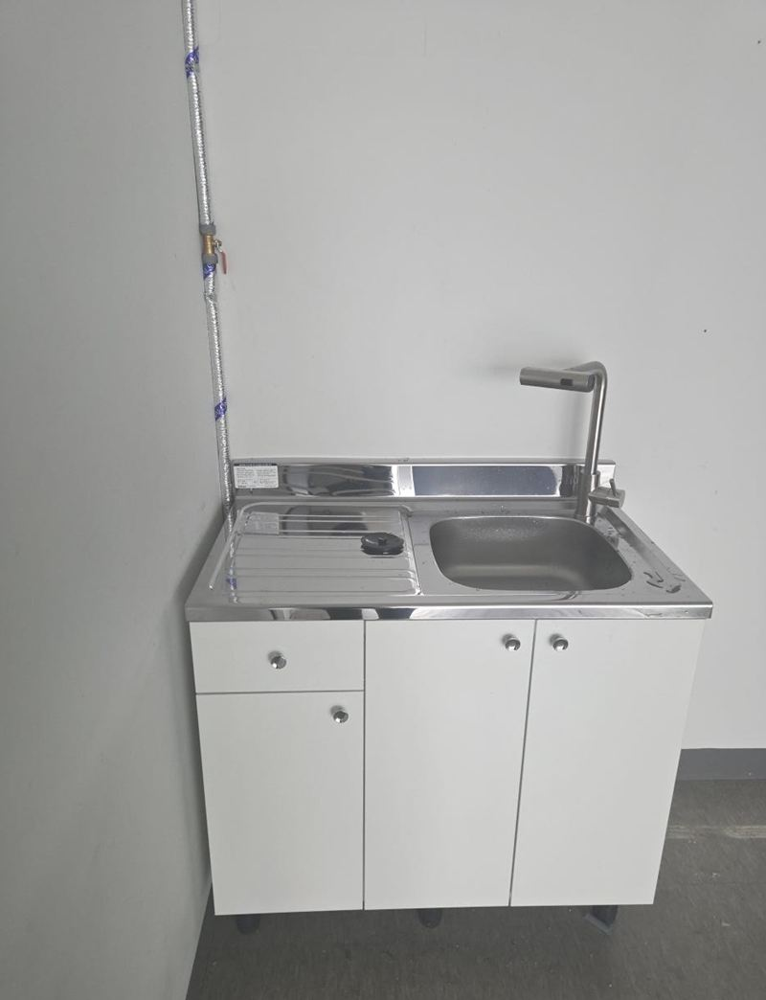
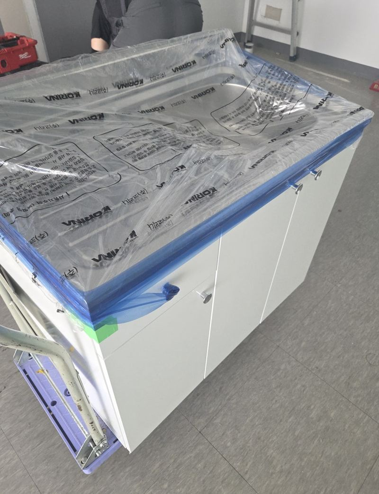
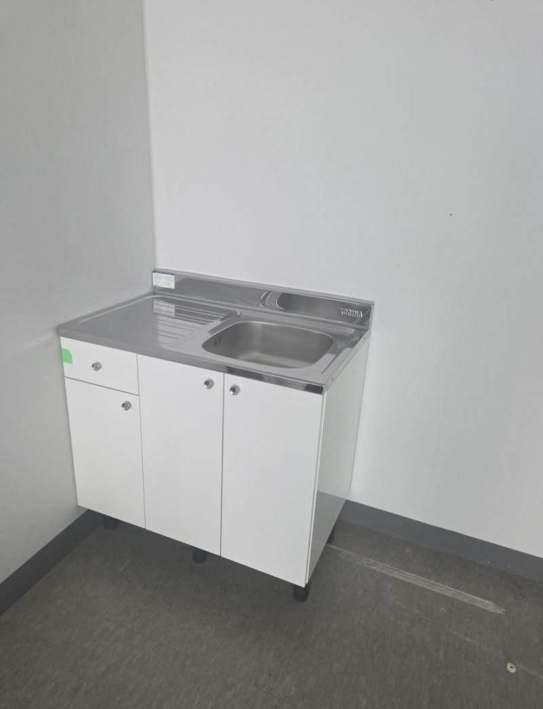
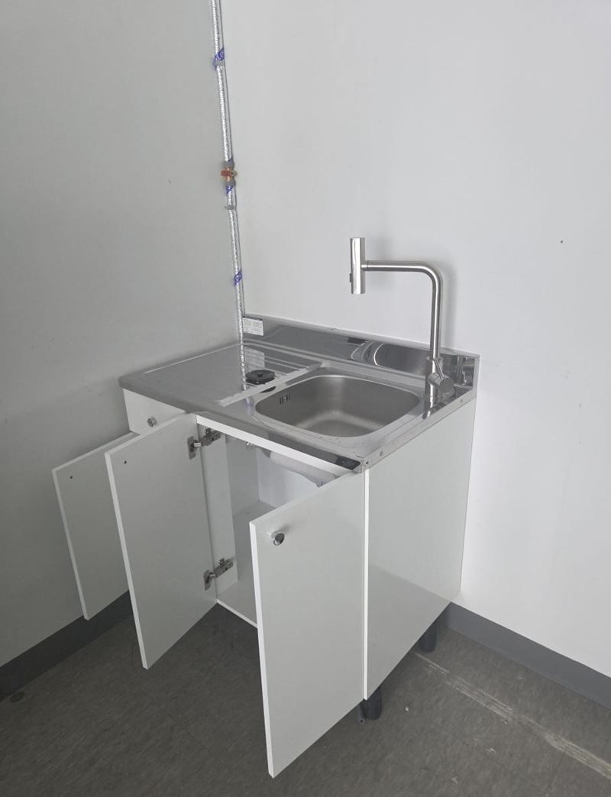
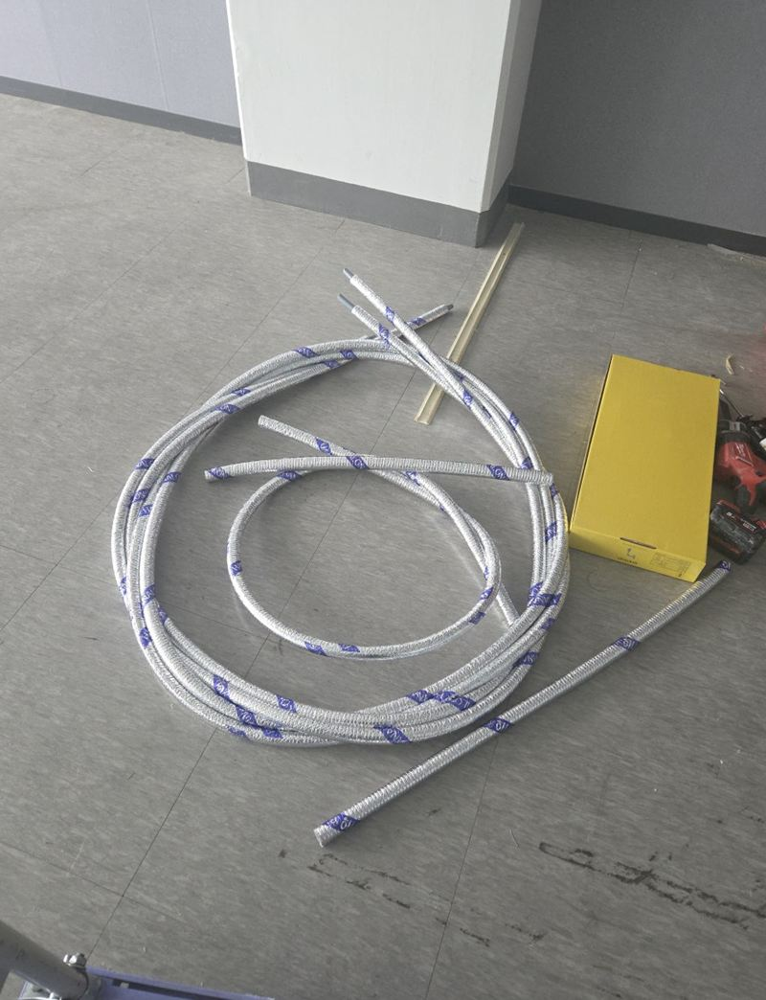
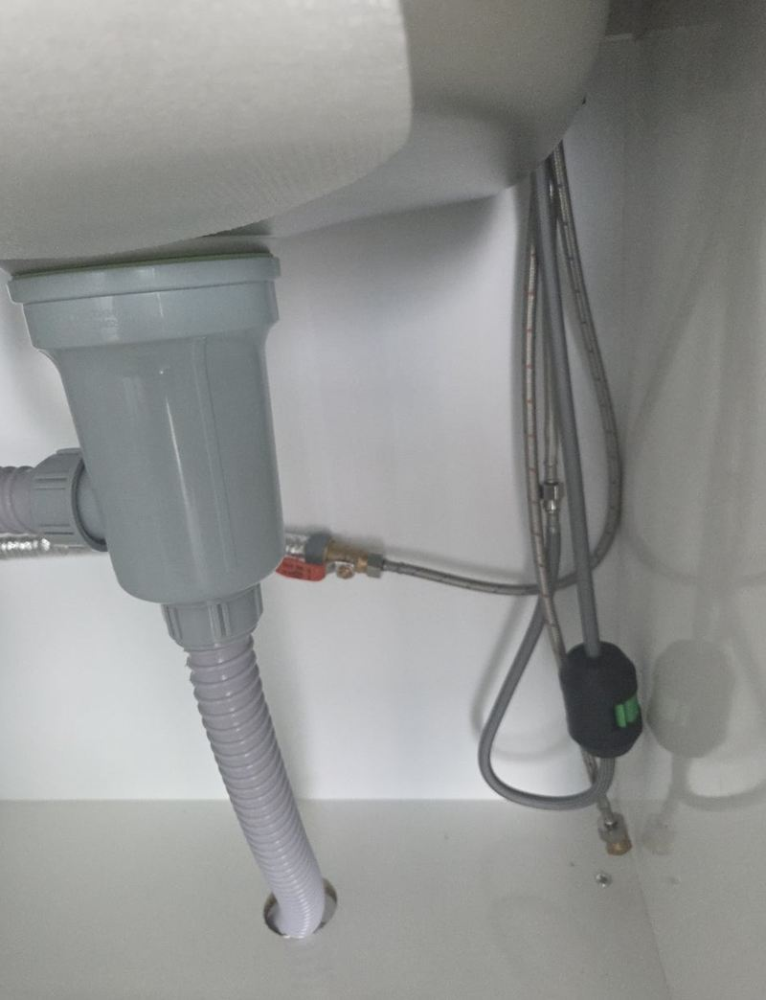
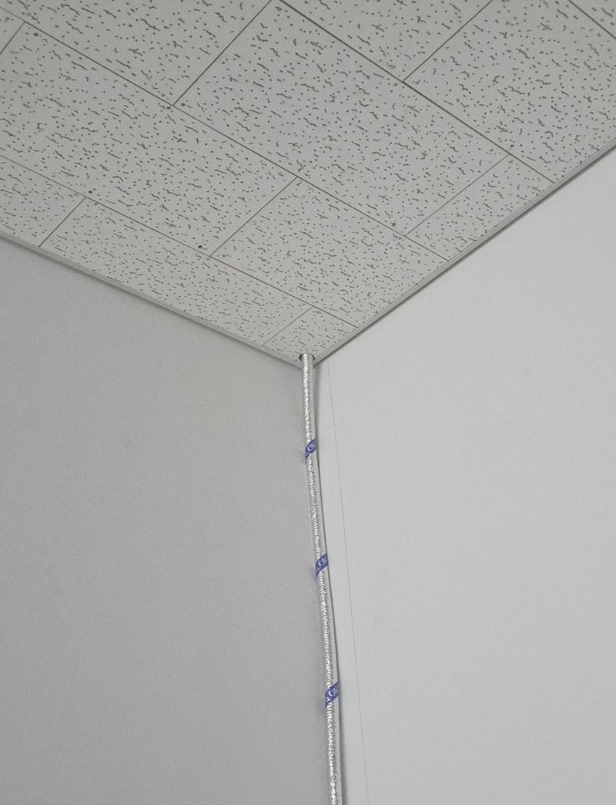

동탄 지식산업센터 싱크대 설치, 업체 고르는 기준


설치 전설치 후← 밀어서 전후 비교 →
"같은 건물로 옮기는데 쓰던 싱크대를 가져갈 수 있을까요? 비용 차이가 크지 않으면 새것도 비교해 보고 싶어요." 처음엔 이전을 알아보셨지만, 기존 제품 상태와 비용을 따져 보니 새로 놓는 쪽이 나았어요. 그래서 900 사이즈 싱크대를 새로 놓고, 수도가 없던 자리는 천장 밸브에서 물을 끌어 내렸어요.
| 현장 | 동탄 엠타워(지식산업센터), 같은 건물 안 호실 이전 |
|---|---|
| 판단 | 기존 제품 이전 vs 신규 → 비용·사용성을 비교해 신규 900 싱크대 |
| 새 호실 설비 | 배수는 있음, 급수 없음 → 천장 텍스 위 밸브 활용 |
| 한 일 | 밸브 확인 → 벽면 따라 급수 내리기 → 싱크대 설치 → 급배수 연결·누수 확인 |
옮길까, 새로 놓을까
쓰던 싱크대를 옮기는 게 늘 싸지는 않아요. 철거·운반·재조립에 손이 들고, 오래된 하부장은 옮기다 상하기도 해요. 반대로 작은 사이즈 싱크대는 새 제품 가격이 크지 않아서, 같은 건물 이동처럼 거리가 짧아도 신규가 나을 때가 있어요.
| 기존 이전이 나을 때 | 신규 설치가 나을 때 | |
|---|---|---|
| 제품 | 상태가 좋고 크거나 맞춤 제작 | 낡았거나 작은 기성품 |
| 공간 | 새 자리 크기가 비슷함 | 새 자리가 좁거나 모양이 다름 |


천장에서 물 끌어 내리기
새 호실은 배수구는 있었지만 수도가 없었어요. 지식산업센터는 천장 텍스 위에 급수 밸브를 미리 빼 둔 경우가 많아서, 그 밸브를 찾아 배관을 연결한 뒤 벽면을 따라 아래로 내렸어요. 사무실은 배관을 다 숨기기 어려운 곳이 많아, 보이더라도 깔끔하고 나중에 점검하기 쉬운 쪽으로 정리했어요.




사무실 싱크대 업체, 이것부터 물어보세요
- 설비까지 하나요?제품만 놓는 곳인지, 급수·배수 연결까지 하는지 확인하세요.
- 새 호실 설비를 먼저 보나요?급수 유무, 배수 위치, 천장 밸브 여부를 보고 견적을 내야 추가 비용이 덜 생겨요.
- 건물 규정을 아나요?지식산업센터는 작업 시간과 반입 경로가 정해진 곳이 많아요.
- 이전과 신규를 같이 비교해 주나요?한쪽만 권하지 않고 둘을 놓고 설명해 주는지 보세요.
지식산업센터 싱크대 질문
900 사이즈면 충분할까요?
컵과 간단한 설거지 위주의 탕비실이면 대부분 충분해요. 냉장고·정수기 자리도 같이 생각해 보세요.
온수기도 같이 달 수 있나요?
전원 위치만 맞으면 하부장 안에 작은 온수기를 함께 달 수 있어요.
천장에 밸브가 없으면요?
가까운 화장실이나 기존 배관에서 연장하는 방법을 찾아요. 건물 관리실과 함께 확인해요.
배수구가 없으면 설치가 안 되나요?
배수 위치를 새로 만들어야 해서 바닥 작업이 필요해요. 건물 허가가 필요한 경우가 많아요.
쓰던 싱크대는 처리해 주나요?
철거와 정리를 같이 맡기실 수 있어요. 처리 방법은 상담할 때 정해요.
설치 후 바로 써도 되나요?
연결 후 물을 흘려 누수와 배수를 확인하고 마무리해요. 실리콘이 굳는 동안만 조심해 주세요.
사무실 싱크대 상판 재질은 뭐가 좋아요?
물 많이 쓰는 탕비실이면 스테인리스나 인조대리석이 관리가 편해요.
같은 건물 다른 층으로 옮겨도 되나요?
가능해요. 엘리베이터 사용 시간과 반입 경로만 미리 알려주세요.
다른 싱크대·수납장 현장
- 부천 싱크대 이사 이전 재설치 비용과 방법
- 부천 아일랜드 식탁 리폼으로 공간 넓히는 방법
- 화성 빌트인 오븐 철거 후 하부장 제작 비용
- 종로 싱크대 하부장 곰팡이 보수 방법
- 파주 사무실 이전 싱크대 철거 비용과 순서
- 성동 사무실 이전 시 기존 싱크대 재설치 순서
- 동탄 주방 싱크대 상하부장 철거·제작 비용 · 블로그
- 고양 싱크대 하부장 밑판 썩음, 교체 방법 · 블로그
- 고양 키큰장 리폼으로 상부장 만드는 방법 · 블로그
- 경기광주 부엌 수납장 교체 비용과 순서 · 블로그
- 하남 펜트리장 제작·이전 설치 방법 · 블로그
- 화성 상부장 처짐 없이 벽면 고정하는 방법 · 블로그
- 종로 오픈 수납장 문짝 새로 다는 방법 · 블로그
새 호실 사진과 천장·배수구 위치, 원하는 싱크대 크기를 알려주세요.
전화 상담 010-4517-9872